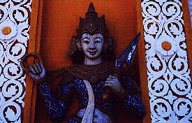
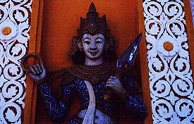

YegyiOoPagoda/PATHEIN
イェジーウーパゴダ
まっ黄色のパゴダはパガンのアーナンダー寺院を彷佛とさせるフォルム。
内部にある金色のパゴダはパガン時代のもの（「地球の歩き方」より）。
 つまりいにしえのパゴダの入れ物としての「入れ子」パゴダ。いうなれば中尊寺の金色堂を覆っている覆屋みたいなものか。
境内には寝釈迦像や謎の蛇の像への長い回廊などがある。
のっけからナンだがミャンマーのパゴダにしては強烈な印象は少なかった。
真面目に信仰している人達には申し訳ないが、もっと笑えなきゃ。
特筆すべきはここが私にとって初詣だった、という事だ。

つまりいにしえのパゴダの入れ物としての「入れ子」パゴダ。いうなれば中尊寺の金色堂を覆っている覆屋みたいなものか。
境内には寝釈迦像や謎の蛇の像への長い回廊などがある。
のっけからナンだがミャンマーのパゴダにしては強烈な印象は少なかった。
真面目に信仰している人達には申し訳ないが、もっと笑えなきゃ。
特筆すべきはここが私にとって初詣だった、という事だ。
 
次のパゴダへGO！
ミャンマーパゴダ列伝２のページへ
珍寺大道場 HOME